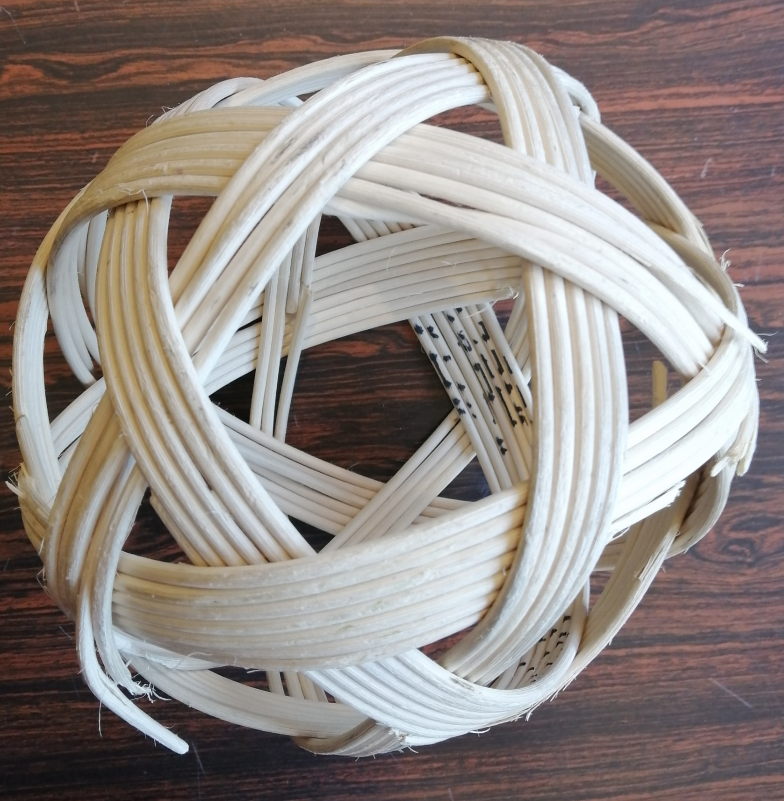
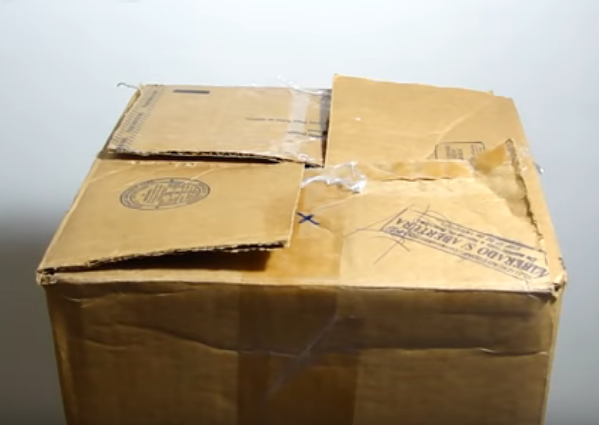
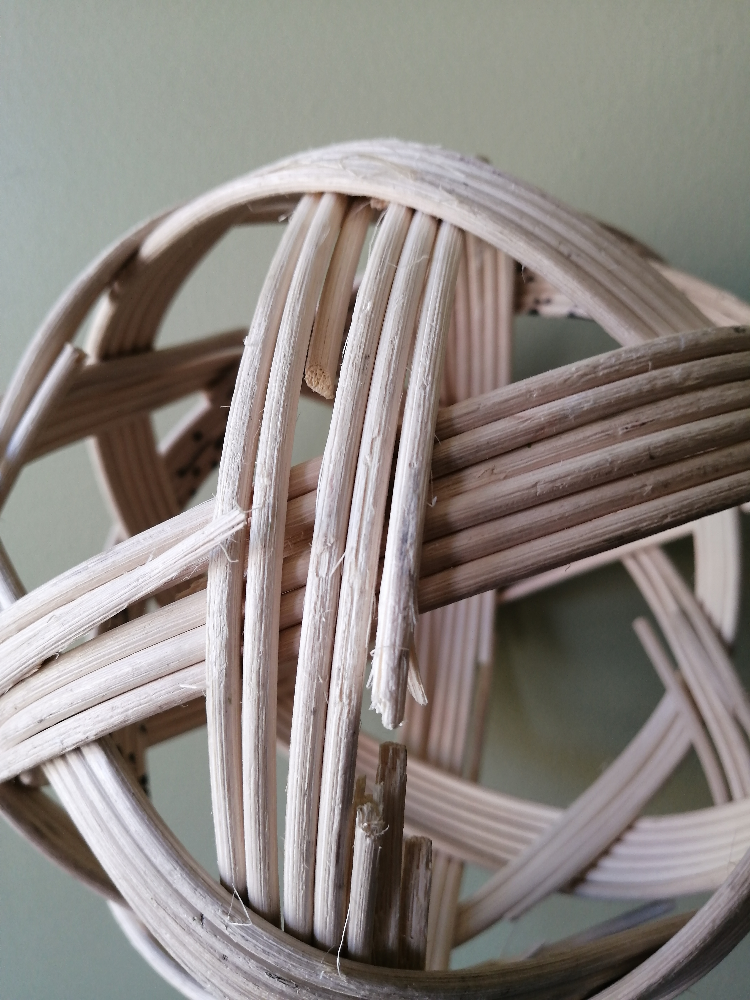

Ball
Ball is the game chinlone - it originates from Myanmar.
How to play
- Don't let the ball touch the ground
- Don't play the ball with your hands
Construction - Make your own
- The underlying structure of a ball is an Icosidodecahedron, see the following Orthographic Projection:
- Materials:
- (4.5mm or your choice of size) rattan core
- Construction
- The main idea is by applying the fact that we can make the top of a box stay closed by using this pattern: 
- The reason it holds is that one half is held down by the previous flap and the other side is on top of the next flap, holding the next one down, it can do this due to it's rigidity
- Each shape you see on the orthograpic projection will have the same property as folds on the top of the box. For example, we will have triangles where for each band involved in the triangle one side goes under a band and one side goes over a band. This gives the ball it's structure.
- Repairing
- As you use the ball it will get worn down. Eventually one of the bands will start to break down and snap, this usually isn't a problem until you have at least 2 or 3 bands breaking down. At the following point of wear in the image, I would replace the band 
- Remove the old band (you can snap the band as you go), and just weave the new band in.
- By repairing your ball it actually becomes smaller and tighter, this makes the ball harder to break in the future. Also repairing one band once in a while is easier than making a whole new ball from scratch.